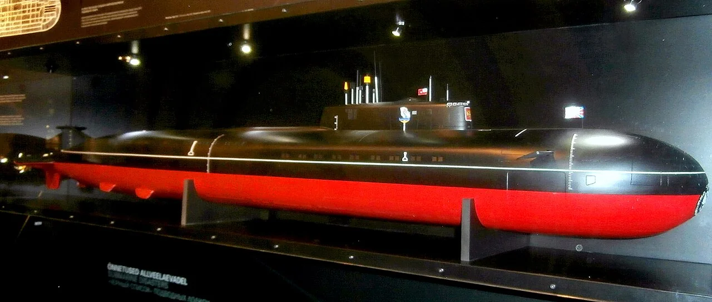
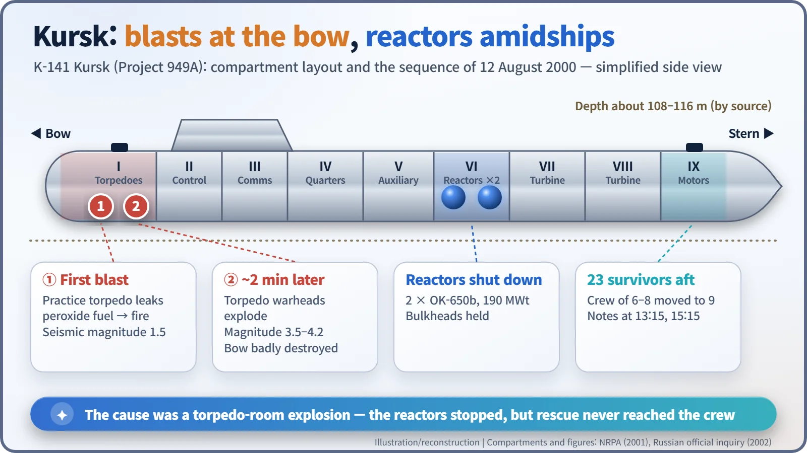
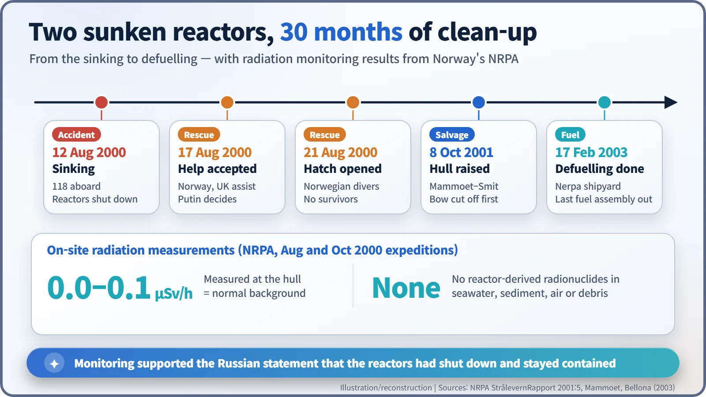

Nuclear History · 170
Two Tremors on a Norwegian Seismograph — The Kursk Disaster (2000) and the Reactors That Stayed Shut Down
A practice torpedo, not the reactors, sank the Kursk; both reactors shut down, monitoring found no leakage, and the rescue became a lasting controversy.
On 12 August 2000 the Russian nuclear submarine Kursk sank in the Barents Sea after a practice torpedo exploded in its torpedo room, followed about two minutes later by a much larger chain explosion. All 118 people aboard died. The cause was not the reactors: both shut down, and Norwegian monitoring found no radioactive leakage before the hull was raised in 2001 and defuelled by 2003.
Two tremors on a seismograph
On the morning of Saturday, 12 August 2000, the Norwegian seismic array service NORSAR recorded a small tremor: magnitude 1.5. About two minutes later a far larger one registered at stations in mainland Norway and on Svalbard. The source was not under the land. It was in the Barents Sea, where Russia's Northern Fleet was holding a major exercise, and where the submarine Kursk, with two nuclear reactors on board, was at sea. [1]
A cruise-missile giant
K-141 Kursk was a Project 949A submarine, known in the West as the Oscar II class: a nuclear-powered cruise-missile boat 154 m long, displacing about 24,000 tonnes submerged. Bulkheads divided the hull into nine watertight compartments. Compartment 1, at the bow, was the torpedo room; compartment 6, amidships, held the reactors; compartment 9, at the stern, housed the electric motors. The two OK-650b pressurised water reactors produced about 190 MWt each, less than a tenth of a typical power-station reactor, in the words of Norway's radiation protection authority. For a navy that had lived through years of tight budgets after the Soviet collapse, the exercise was a rare large-scale outing. [1]

The reactors did not sink the Kursk
This needs saying plainly: the Kursk was not lost to a reactor accident. On 26 July 2002 a Russian government commission and Prosecutor General Vladimir Ustinov announced the official finding. A faulty weld in a "65-76 Kit" practice torpedo in compartment 1 let its high-test peroxide (HTP) fuel leak and explode. In the fire that followed, other torpedo warheads detonated about two minutes later. Norwegian measurements put the second event at magnitude 3.5; other analyses put it at 4.2. The submarine came to rest on the seabed at a depth of about 108 m (the Norwegian report gives 116 m). All 118 people on board died. [1] [6]
Other explanations were put forward. In autumn 2000, Navy Commander-in-Chief Vladimir Kuroyedov and Northern Fleet commander Vyacheslav Popov, among others, raised the possibility of a collision with a foreign submarine. The final official investigation did not adopt that view. [6]

What happened to the reactors?
The blasts tore open the bow, but the bulkheads around the reactor compartment held. Russian authorities stated that both reactors shut down automatically through the emergency shutdown system. Shutting down means driving neutron-absorbing control rods in to stop the chain reaction. The radioactive material inside the cores remains, however, so the next question was whether anything was leaking. [1]
Neighbouring Norway took on much of that checking. The Norwegian Radiation Protection Authority (NRPA) heard about the accident on 14 August and within hours informed the International Atomic Energy Agency (IAEA) and the other Nordic countries. On 16 August it analysed seawater and air filters collected about 60 km from the site and found no trace of radioactivity from the reactors. On expeditions to the wreck in August and October 2000, divers and remotely operated vehicles measured dose rates of 0.0–0.1 µSv/h, which is ordinary background for the sea. Samples of water, sediment, air and debris showed the same. The NRPA concluded that this was consistent with the Russian statement that the reactors had shut down, and that the reactor compartment had not filled with contaminated water. [1] [2]
Twenty-three men in compartment 9, and the rescue debate
The tragedy lay at the stern. A note by Lieutenant-Captain Dmitry Kolesnikov, recovered in October 2000, said that the crew from compartments 6, 7 and 8 had moved to compartment 9, and that 23 men were there. The note carried the times 13:15 and 15:15. How long they survived is an estimate, not an established fact: several analysts concluded more than six hours, while Prosecutor General Ustinov said all had died within eight hours and could not have been saved in time. [1] [6]
Russian rescue submersibles tried several times but failed to lock onto the escape hatch of compartment 9; Russian officials cited bad weather and a damaged hatch. Offers of help from Norway, Britain and others were at first declined, and President Vladimir Putin decided to accept them on 17 August. When Norwegian divers opened the hatch on 21 August, nobody was alive. Families and the press criticised the response as too slow. On 8 September, asked on CNN's Larry King Live what had happened to the submarine, Putin answered through his interpreter, "It sunk." The exchange has been quoted ever since. [1] [5]
Lifting the reactors out of the sea
Russia decided to raise the hull. A consortium of the Dutch firms Mammoet and Smit first cut away the shattered bow on the seabed, then cut 26 holes in the hull and used 26 strand jacks to lift the submarine beneath the barge Giant 4 on 8 October 2001. Independent radiation specialists took part, and no leakage was detected. The remains of 115 crew members were recovered; three were never found. [4] [6]

In April 2002 the hull was moved to the Nerpa shipyard, and on 17 February 2003 the last fuel assembly was removed from the aft reactor. According to Bellona, it was the first time the navy had defuelled a submarine that had suffered a severe accident and lain on the seabed for more than a year. [3]
The reactors stopped as designed, and the sea was not contaminated. Yet 118 people did not come home. The questions the Kursk left behind were not only about reactor safety, but about the systems that rescue people after an accident, and how quickly information is shared.